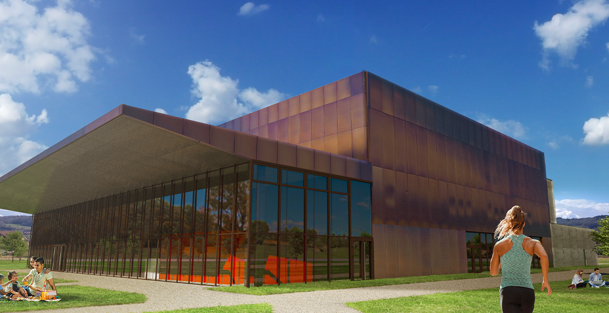

<!doctype html>
<html class="no-js" lang="">
    <head>
        <meta charset="utf-8">
        <meta http-equiv="x-ua-compatible" content="ie=edge">
        <title>Podium</title>
        <meta name="description" content="">
        <meta name="viewport" content="width=device-width, initial-scale=1"> 
		<link rel="shortcut icon" type="image/x-icon" href="#">
        <!-- Place favicon.ico in the root directory -->
        
		<!-- CSS here -->
        <link rel="stylesheet" href="assets/css/bootstrap.min.css">
        <link rel="stylesheet" href="assets/css/magnific-popup.css">  
        <link rel="stylesheet" href="assets/css/style.css">
        <link rel="stylesheet" href="assets/css/responsive.css">
    </head>
    <body style="background-color: #B28652;">

       
    <!-- header-area START -->
    <div class="header-area">
        <div class="container">
            <div class="row align-items-center">
                <div class="col-lg-12 ">
                    <div class="logo-area">
                        <a href="index.html"> <span>Spectacles, cinéma, événements</span></a>
                    </div>
                </div>
            </div>
        </div>
    </div>
    <!-- header-area END -->

    <main>


        <section class="home">
            <h1>le compte à rebours est lancé !</h1>
            <div class="container">
                <div class="row">
                    <div class="col-lg-12">
                        <div class="home-cont">
                            <div class="color-snap d-none d-xl-block">
                                <span class="blc"></span>
                                <span class="rd"></span>
                                <span class="wht"></span>
                            </div>
                            <div class="popup">
                                <a href="assets/img/pop.png" class="play-btn"></a>
                                <i>
                                    
                                </i>
                            </div>
                            <div class="email">
                                <h2>rejoignez-nous</h2>
                                <form action="">
                                    <div class="input-box">
                                        <a href="#" class="emleft"></a>
                                        <input type="text" placeholder="entrez votre e-mail">
                                        <a href="#" class="emright">
                                            
                                        </a>
                                    </div>
                                </form>
                                <small>En soumettant ce formulaire, vous acceptez que les informations saisies soient utilisées pour vous envoyer la newsletter du Podium. Vous pourrez facilement vous désinscrire à tout moment via les liens de désinscription présents dans chacun de nos emails.</small>
                            </div>
                            <div class="program">
                                <h2>votre programme de décembre</h2>
                                <div class="program_blk">
                                    <h4>Mercredi 1er Décembre</h4>
                                    <p>Arbre de Noël annulé par Monsieur Le Maire et le Comité des Fêtes en raison de l’instabilité de la situation sanitaire.</p>
                                </div>
                                <div class="program_blk">
                                    <h4>Samedi 4 Décembre </h4>
                                    <p>Portes ouvertes pour l’inauguration du Podium pour tous les Poisilliens et Poisilliennes. Les associations culturelles de Poisy (Ballerina, L’estrade, L’École de Musique et Les Étincelles) seront heureuses de vous proposer un spectacle création, suivi d’une visite guidée du Podium en avant-première. Nous vous attendons nombreux à 10h.</p>
                                </div>
                                <div class="program_blk">
                                    <h4>Vendredi 17 Décembre</h4>
                                    <p>Concert de l’Ecole de musique de Poisy.</p>
                                </div>
                            </div>
                        </div>
                    </div>
                </div>
            </div>
        </section>

    </main>

    <footer>
        <ul>
            <li><a href="#"></a></li>
            <li><a href="#">ville de poisy</a></li>
            <li><span>200, route Parc’Espaces - 74330 Poisy</span></li>
        </ul>
    </footer>
    
		<!-- JS here --> 
        <script src="assets/js/jquery-3.4.1.min.js"></script>
        <script src="assets/js/popper.min.js"></script>
        <script src="assets/js/bootstrap.min.js"></script>
        <script src="assets/js/owl.carousel.min.js"></script>
        <script src="assets/js/jquery.magnific-popup.min.js"></script>   
        <script src="assets/js/main.js"></script>
    </body>
</html>